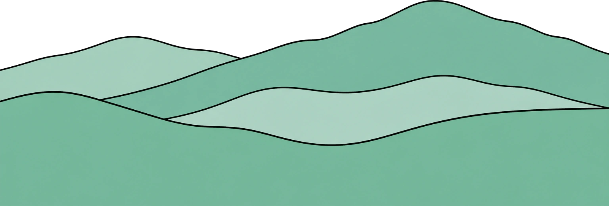
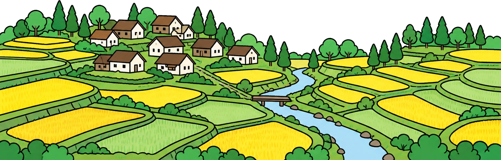
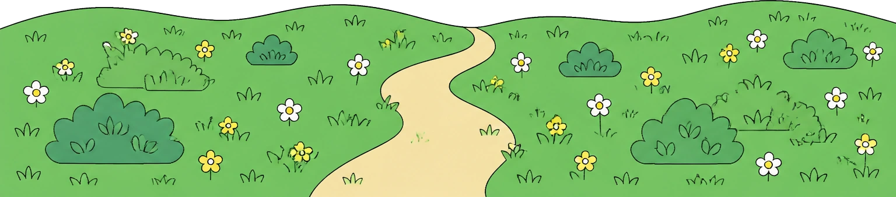
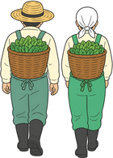
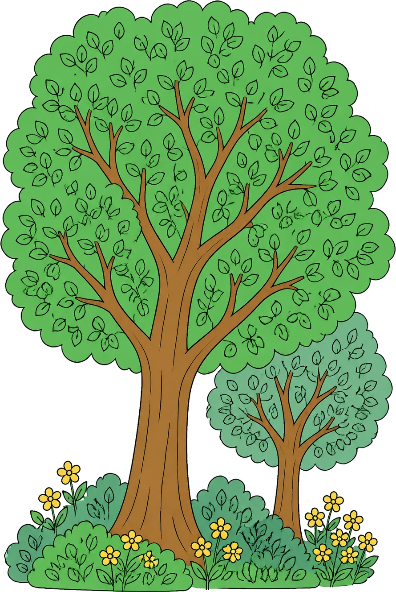
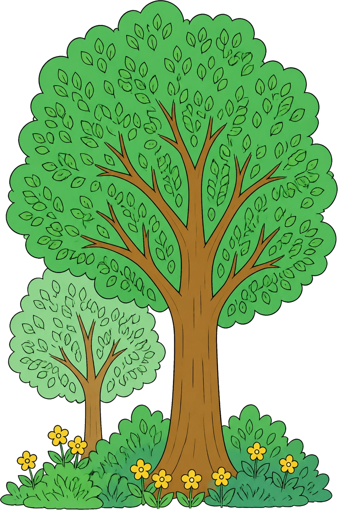
PROBLEM
こんなこと、ありませんか？
-
1
相続したはいいが、
境界がどこか分からない登記は自分の名前になっている。でも、どこからどこまでが自分の山なのか、誰にも聞けないまま何年も経っている。
-
2
「そろそろ手を入れないと」
と言われて10年区長さんにも役場にも言われている。やらないといけないのは分かる。ただ、何から始めるのかが分からない。
-
3
見積もりを頼んだら、
思っていた桁と違った3haで数百万。そんな金額は出せない。かといって放っておくと、倒れた木が道に出るのも時間の問題。
ぜんぶ、こちらで引き受けます。
モリツグができること
山を売る話でも、補助金の書類を書かせる話でもありません。
-
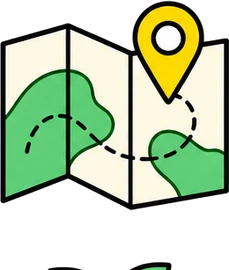
01 境界と現況
まず、山の輪郭を
はっきりさせる
公図と登記、それから現地。3つを突き合わせて、いまの境界を1枚の図にまとめます。隣の山の持ち主への挨拶も、こちらで回ります。所有者が複数に分かれている場合の整理も含みます。
-
02 企業とつなぐ
山と企業を、
性格で引き合わせる
「とにかく木を植えたい」企業もあれば、「社員が毎年来られる場所がほしい」企業もあります。山の側の事情と合う相手だけを持ってきます。合わなければ、無理に決めません。
-
03 毎年まわす
決めたあとの手間を、
こちらで持つ
作業の手配、当日の立ち会い、写真の記録、年に一度の報告書。続けるのに要る面倒はぜんぶ引き受けます。お願いするのは年1回、報告書に目を通していただくことだけです。
どれか1つだけをお願いすることもできます。
引き受けるまでの流れ
MORITSUGU
FLOW
-
STEP 1
お話をうかがう
どこにある山で、いまどうなっているか。分かる範囲で構いません。「登記簿が見つからない」から始まる方がほとんどです。
費用はかかりません
-
STEP 2
山を見にいく
こちらで現地に入り、木の育ち具合と道の有無を見ます。写真と簡単な図にまとめて、そのままお渡しします。
2〜3週間
-
STEP 3
手の入れ方を決める
全部やる必要はありません。今年どこまでやるかを、費用と一緒に3案お出しして、選んでいただきます。
1ヶ月ほど
-
STEP 4
企業を探す
決めた計画に合う企業を、こちらから当たります。相手が決まったら、三者で一度お会いする場を作ります。
2〜4ヶ月
-
STEP 5
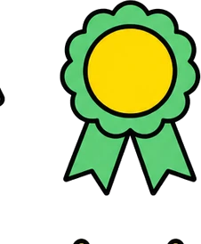
はじめて、続ける
作業の手配から報告書まではこちらの担当です。年に1回、その年の写真と収支をまとめてお送りします。
毎年
途中でやめても違約金はいただきません。合わなければ、そう言ってください。
つないだ山と企業
これまでにお引き受けした山です。すべて所有者の方の許可を得て載せています。
-
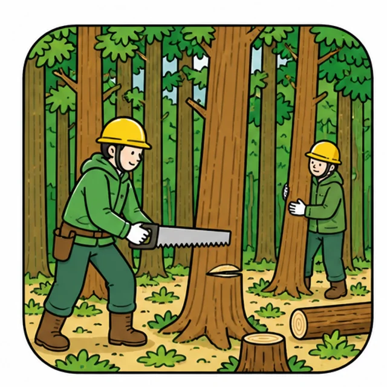
間伐 30年ぶりに、道が通った
植えたまま手が入っていない山でした。まず作業道を1本入れて、3年かけて間伐を進めています。光が入って、下草が戻りました。
相手企業：株式会社みなも印刷
-
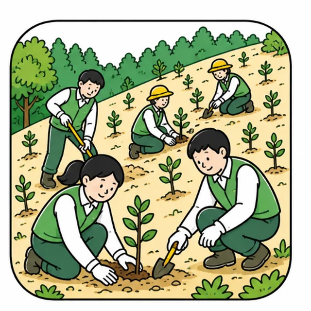
植樹 社員が、毎年来る山になった
「社員旅行の行き先がほしい」という相談から始まりました。春に苗を植えて、秋に草を刈る。今年で4年目です。
相手企業：かえで運輸株式会社
-
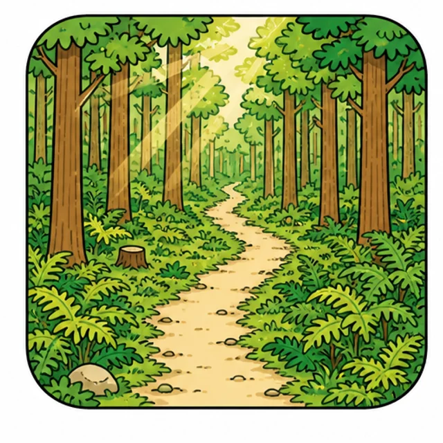
整備 倒れる前に、片づいた
台風のあと、道に倒れかけた木が20本以上ありました。危ないところから順に片づけて、いまは通れます。
相手企業：株式会社つばくろ食品
-
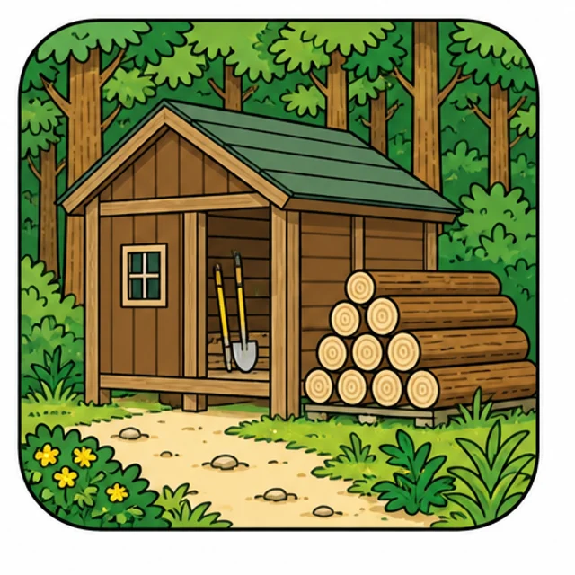
小屋 道具を置く場所ができた
山に入るたび軽トラで道具を運んでいました。小屋を1つ建てただけで、行く回数が倍になりました。
相手企業：みどり県森づくり基金
掲載しているのは一部です。近い条件の山があればお伝えします。
数字で見るモリツグ
- 48件
これまでにつないだ山
- 214ha
手を入れた面積
- 31社
関わっている企業
- 9年
続いている年数
※ 2026年8月時点。すべてこのサイト用の架空の数字です。
Q & A
よくある質問
- 山の場所が正確に分からなくても相談できますか。
- 大丈夫です。「たしかこの沢の向こう」くらいから始まる方がほとんどです。公図と現地で一緒に探します。
- 所有者が親のままなのですが。
- 構いません。相続の手続きが済んでいなくても、話は進められます。必要なら司法書士をご紹介します。
- 費用はどのくらいかかりますか。
- 最初の相談と現地調査までは無料です。そのあとは企業側の負担でまかなえる範囲で組みますので、所有者の方の持ち出しが出ない形を先に探します。
- 企業が見つからなかったらどうなりますか。
- そのときは正直にお伝えします。見つからないまま費用だけいただくことはありません。
- 途中でやめられますか。
- やめられます。違約金はいただきません。ただし、すでに植えた木の扱いだけは相談させてください。
その山をどうするかは、
まだ決めなくて構いません。
いまどうなっているかを聞かせていただくところから始めます。
相談と現地調査までは費用がかかりません。
000-000-0000 ／ 平日 9:00 - 17:00